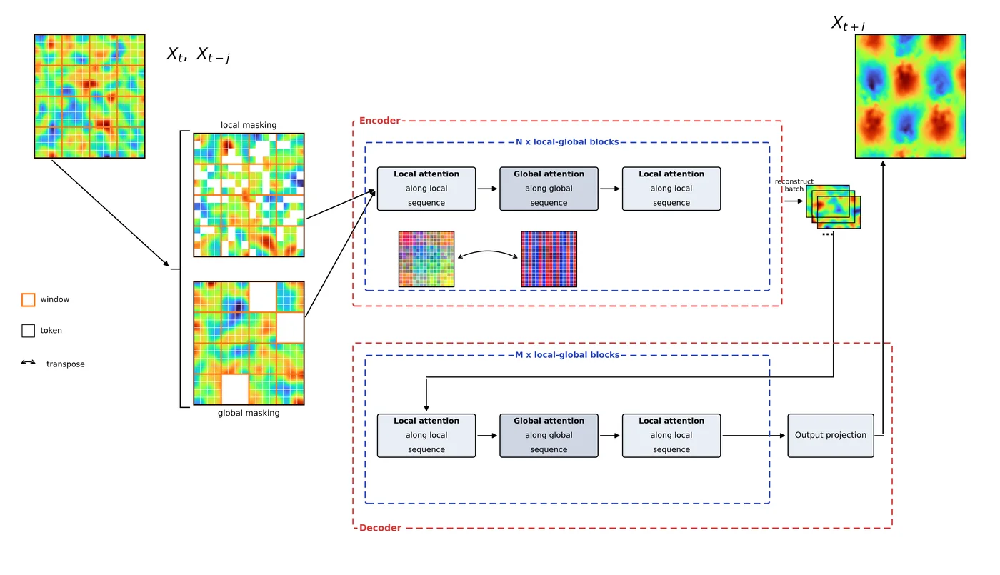
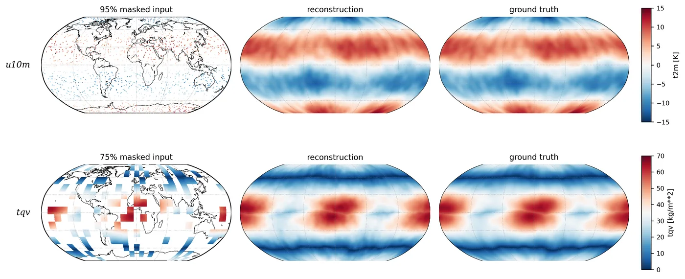
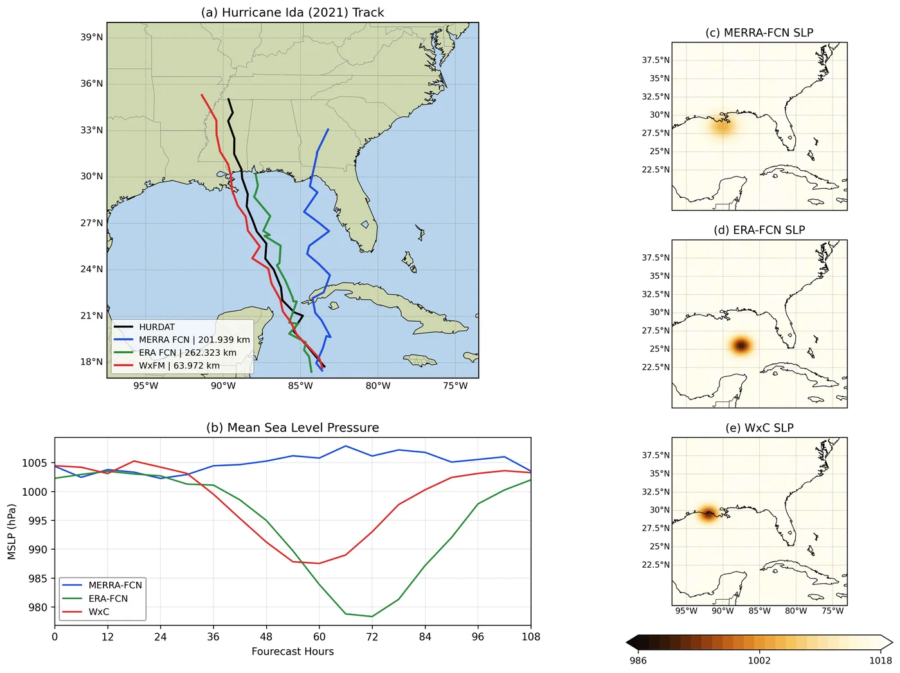
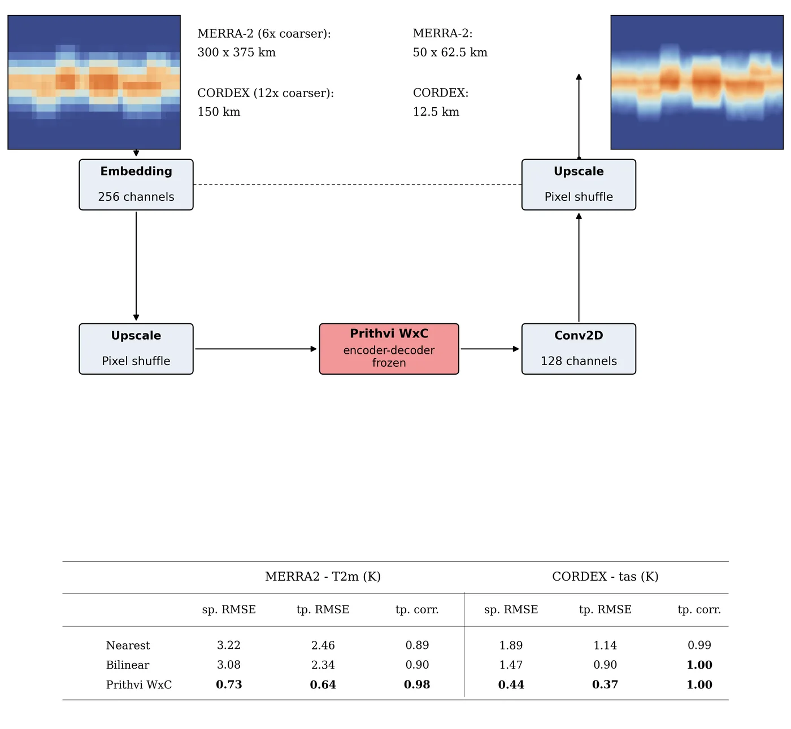
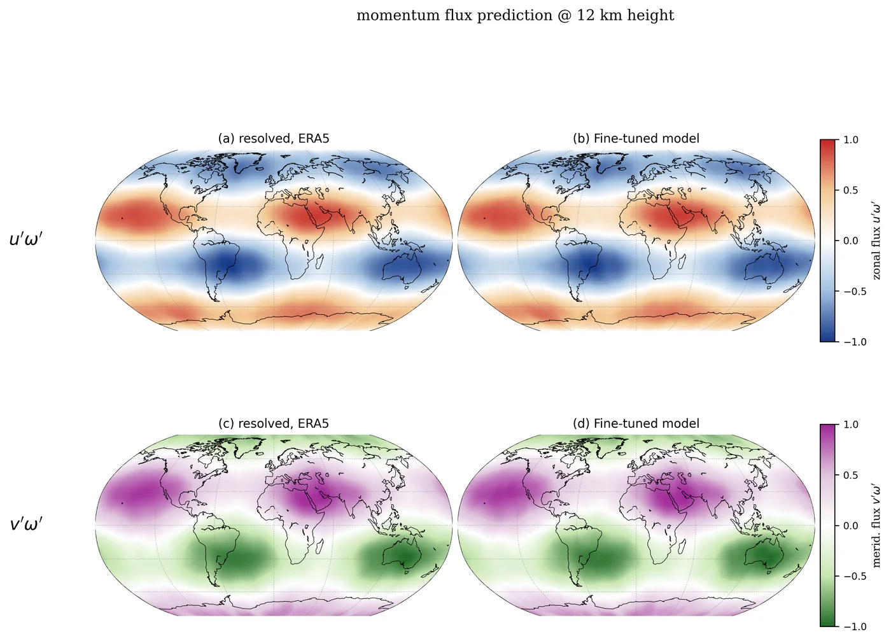

Prithvi WxC — Weather & Climate Foundation Model
The Stormloom
High above the clouds the Stormloom works without rest. Forty years of the world's weather — MERRA-2, 1980 to 2019, one hundred sixty atmospheric threads — feed the loom every three hours, petabytes of it carried along pipelines built to cross computing halls that never touch the open internet.
The loom itself holds 2.3 billion knots: twenty-five encoder and five decoder blocks that learned, first, to restore the sky from torn cloth — masked reconstruction — and then to weave it forward in time. Its quiet secret: it does not predict the weather itself, but the weather's deviation from the long pattern, the climatology.
Show it five percent of the sky and it restores the rest. Set it on Hurricane Ida's trail and it tracks her to within 64 kilometers where older looms wandered by two hundred. Ask it to sharpen a coarse map sixfold and it answers within three-quarters of a degree kelvin.
Project record
Vision Transformer-based foundation model for weather and climate, developed in collaboration with NASA, IBM, Oak Ridge National Laboratory, and NVIDIA. Petabyte-scale data pipelines and LoRA-based downstream fine-tuning.
Role
Computer Scientist (NASA IMPACT) — designed and executed end-to-end data processing pipelines for the petabyte-scale MERRA-2 reanalysis time-series across isolated computing environments, and applied LoRA-based parameter-efficient fine-tuning to build task-specific downstream models from the pretrained backbone.
Stack
Results
- Hurricane Ida track forecasting: mean track error 63.9 km vs. 201.9 km (MERRA-2 FourCastNet) and 262.3 km (ERA5 FourCastNet); landfall error under 5 km.
- Statistical downscaling: 6× MERRA-2 T2m RMSE of 0.73 K — roughly 4× better than nearest-neighbor and bilinear interpolation baselines.
Links
Artifacts from the realm




